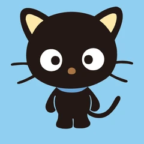

Go back to Sanrio World
CHOCO CAT

TOP FIVE FACTS
- Chococat's low popularity in Japan, compared to his success in the US, stems from a combination of cultural superstitions surrounding black cats and his design not fitting the traditional, soft "kawaii" aesthetic favored there.
- Chococat is a beloved Sanrio character, recognized as a curious black cat with a chocolate-colored nose, born on May 10th.
- He is a "geeky" character who loves exploring, stargazing, and tinkering, often acting as a DIY expert.
- He features prominently in Hello Kitty Island Adventure and similar media.
- Chococat is the only Sanrio character that has divorced parents. His parents names are Rory and Katrina. And their split is quite an emotional experience for Chococat..